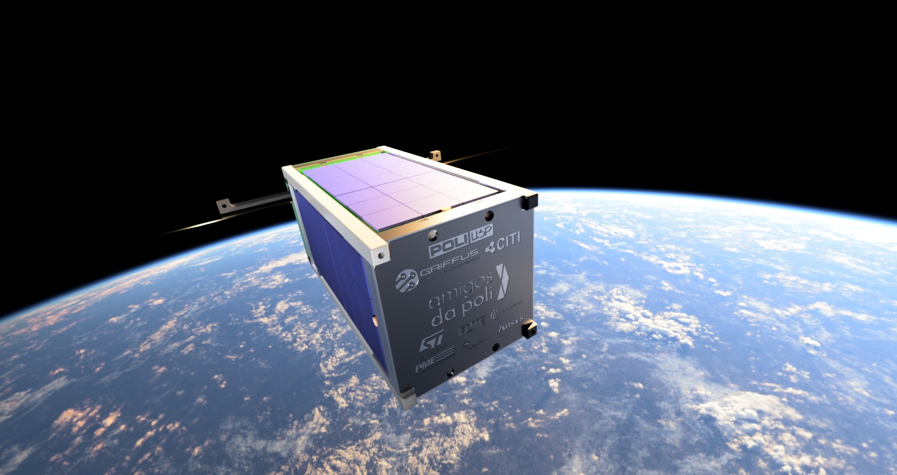

CubeDesign 2026Escola Politécnica · USP
Mission
HERMES
An ADS-B receiver on a 2U CubeSat
Aircraft broadcast their identity, position, altitude and speed on 1090 MHz. Over open sea and mountains, few ground receivers can hear them. Hermes listens from about 500 km up, decodes the messages on board and sends the flight data down over LoRa.
1090MHz
ADS-B signals received
433MHz
LoRa downlink
500km
Design orbit altitude
2U
10 × 10 × 22.7 cm